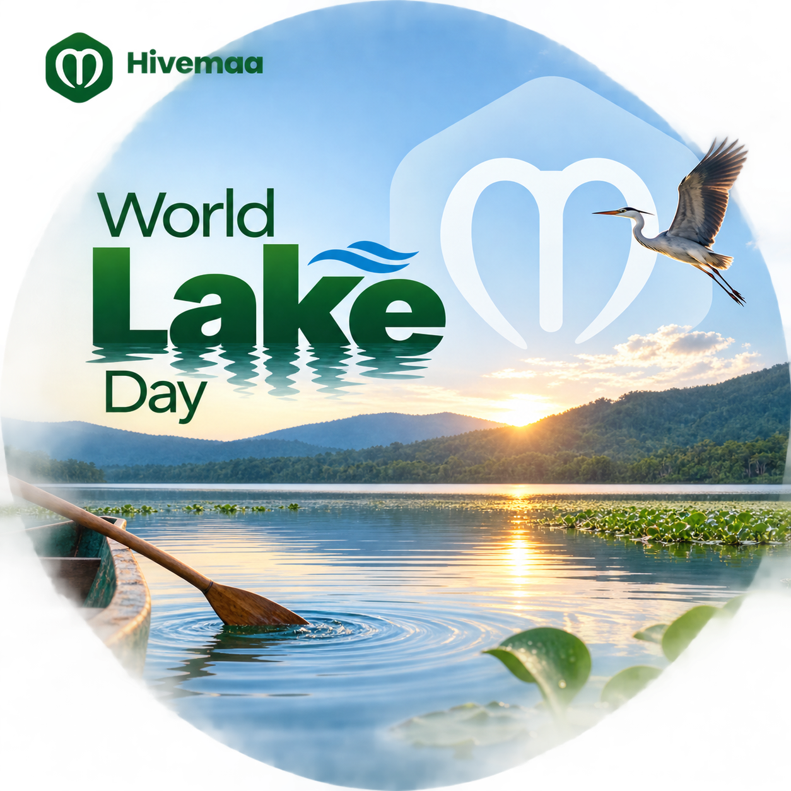

World Lake Day 2026: Why Africa's Lakes Are Everybody's Business
Today Is World Lake Day. Here's Why It Matters.
August 27 is now officially World Lake Day — the UN just established it in December 2024, making this the very first observance.
The date honours the first World Lake Conference held in Japan back in 1984, near Lake Biwa. But this isn't just about history. It's about something far more urgent.
Lakes hold about 90% of the world's unfrozen freshwater. That's the water that irrigates crops, sustains communities, and keeps food on our tables.
For Africa, this hits different. We have some of the most important lakes on the planet — Lake Victoria, Lake Chad, Lake Tanganyika. And right now, many of them are in serious trouble.

The Hard Truth About Lake Chad
Lake Chad has shrunk by 90% since the 1960s.
Let that sink in.
Climate change, excessive irrigation, and reduced rainfall have turned what was once one of Africa's largest lakes into a shadow of itself. And about 30 million people across Nigeria, Niger, Chad, and Cameroon depend on it for their livelihoods.
Farmers can't irrigate. Fishers can't fish. Herders can't find pasture. Communities are displaced. Conflicts over resources are rising.
This isn't an environmental issue. It's a food security issue. It's a stability issue. It's a survival issue.
And it's not just Lake Chad. Lake Victoria is battling pollution from agricultural runoff and invasive species. Reservoirs across Nigeria are silting up. The pattern is clear: when lakes suffer, agriculture suffers, and people suffer.
Why Lakes Matter to Agriculture
You don't have to live near a lake to depend on one. Here's what lakes do for farming:
| What Lakes Provide | Why It Matters |
|---|---|
| Irrigation water | Without lakes, dry-season farming becomes nearly impossible |
| Microclimate regulation | Lakes influence rainfall patterns in surrounding areas |
| Fish and aquaculture | A critical source of protein and income for rural communities |
| Transport routes | Moving produce from farms to markets |
| Natural fertiliser | Nutrient-rich lake sediments can enrich nearby farmlands |
Technology Can Help. Here's How.
This is where AgriTech comes in. Innovation isn't just about increasing yields — it's about protecting the resources that make farming possible.
Precision Agriculture = Less Pollution
One of the biggest threats to lakes is agricultural runoff — fertilisers and pesticides washing into water bodies. Precision agriculture tackles this head-on:
- Soil sensors monitor nutrient levels so farmers apply exactly what's needed, not more.
- Drone spraying targets specific areas, reducing overspray.
- AI-powered advisories recommend optimal application timing to minimise runoff.
Less chemicals in lakes = healthier ecosystems = longer lifespans for vital water sources.
Data-Driven Water Management
Satellite data and IoT sensors can now track lake levels, rainfall patterns, and water usage in real time. This information helps farmers plan better and helps policymakers make informed decisions about water allocation.
Platforms like what we're building at Hivemaa are focused on getting this kind of data into the hands of the people who need it most — farmers, extension workers, and agribusinesses.
Climate-Smart Farming
Simple, practical changes can make a big difference:
- Cover cropping to prevent soil erosion into lakes
- Agroforestry along lake shores to stabilise banks
- Integrated pest management to reduce chemical runoff
These aren't complicated innovations — they just need awareness, training, and support to scale.
Some Good News (Yes, There Is Some)
Lake Victoria
Kenya, Uganda, and Tanzania have been working together through the Lake Victoria Basin Commission to train farmers on sustainable agriculture. In pilot areas, pollution has dropped by nearly 40%. Mobile technology has played a key role in spreading best practices.
Lake Victoria: Pollution dropped by nearly 40% in pilot areas through cross-border cooperation.
Kainji Lake, Nigeria
Kainji Lake supports irrigation, fishing, and hydroelectric power. Local AgriTech innovators are helping farmers adopt soil conservation techniques and water-saving irrigation methods. Small-scale, but impactful.
Lake Chad
The Lake Chad Basin Commission is promoting climate-resilient farming and drought-resistant crops. Progress is slow, but efforts are ongoing.
What You Can Do
Whether you're a farmer, an entrepreneur, a student, or a policymaker, you have a role to play.
If you're a farmer:
- Consider drip irrigation — it uses significantly less water.
- Time fertiliser application to avoid runoff during rainy seasons.
- Maintain vegetation along lake shores to reduce erosion.
If you're in agribusiness:
- Invest in water-efficient technologies.
- Support farmer education on sustainable lake management.
If you're a student or innovator:
- Explore AgriTech solutions for water conservation.
- Research sustainable farming practices near water bodies.
- Advocate for policies that protect lakes.
If you're a policymaker:
- Fund integrated water resource management.
- Incentivise sustainable agriculture near lakes.
- Support data collection on lake health and agricultural impacts.
The Bottom Line
This first World Lake Day isn't just about celebration — it's about reflection and action.
For Africa, where agriculture sustains the majority of the population, lakes are strategic assets. They feed us. They employ us. They sustain us.
Technology won't save lakes by itself. But it can give us the tools to protect them — smarter farming, better data, and more informed decisions.
At Hivemaa, we're committed to playing our part. Connecting agriculture with technology, knowledge, and opportunity means helping farmers and communities safeguard the resources they depend on.
Sources: United Nations, Lake Victoria Basin Commission, Lake Chad Basin Commission, International Institute of Tropical Agriculture (IITA), World Lake Day Official Documentation
About the author: This article was written by The Hivemaa Team. Hivemaa is an agricultural technology company dedicated to advocating for and building a sustainable future for the African Agricultural Technology Space.